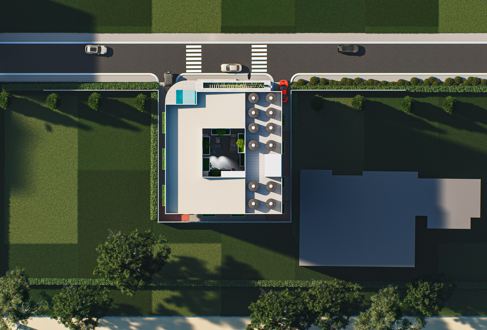

Tanoso, Kumasi Architecture presentation
Life aroundthe open centre.
Shops at street level. Rooms above. A courtyard that brings daylight into the heart of the building.
01 / The idea
More than a room above a shop.
How can one building serve the street and the people living above it?
The proposal gives the ground floor to commerce and covered parking. Eight levels of rooms rise around an open courtyard, with planted edges and shared space at the centre.
Follow the concept
The proposal occupies a street-facing plot in Tanoso, Kumasi. Architectural impression.
02 / Concept narrative
One volume. Six deliberate moves.
The project starts as a compact mass, opens at the ground and centre, then gains balconies, planting and a frame. The stair is shown in the approved renders below.
01 / 06
Begin with a compact mass.
A single volume establishes the building’s footprint and a clear edge to the street.
Concept sequence redrawn from the project PDF’s “Form Development” page. Diagram is explanatory, not a measured model.
03 / The building
A clear sequence from street to sky.
The exterior frame, open stair and planted courtyard make each part of the building easy to read.
A pale outer frame gives the street elevation its rhythm.
A legible vertical accent runs up the building edge.
Green terraces soften the building around shared space.
04 / Ground-floor organization
Read the ground as drawn.
Select a zone on the project ground-floor plan to locate the parking, shops and two circulation cores.

From the project ground-floor drawing. Tinted outlines are viewing guides over the source plan.
Swipe the drawing to inspect its details.
Parking court
Six, four, six.
The drawing numbers six bays at the rear, four beside the lift and internal stair, and six nearer the street. Open areas between them allow vehicles to circulate and turn.
16 numbered bays on the source plan05 / Plans
Understand every level.
Move between the ground floor and the three upper-floor layouts. Open a drawing to inspect it at full size.
Ground / Arrival and commerce
A shared address at street level.
Three lettable shops face the street. The rest of the level accommodates a covered car park, with separate routes into the upper floors.
The drawings are presented as linework without paper or colour fills. Source: project presentation drawings. Consult the source plans for dimensions and approvals.
At the centre
The building opens up.
A void through the upper floors gives the rooms a shared outlook and a route for daylight.
06 / Project views
See the proposal from every side.
All views shown here come from the approved Tanoso render set.
Swipe to explore more images.
Tanoso House / Kumasi
A place for the street. A place to stay.
Revisit the plans and images, or return to the beginning of the presentation.
At a glance
Ground floorShops + parkingUpper floorsEight levelsRoom arrangement15 per levelAt the heartOpen courtyard120 rooms is calculated from 15 rooms on each of eight upper floors.